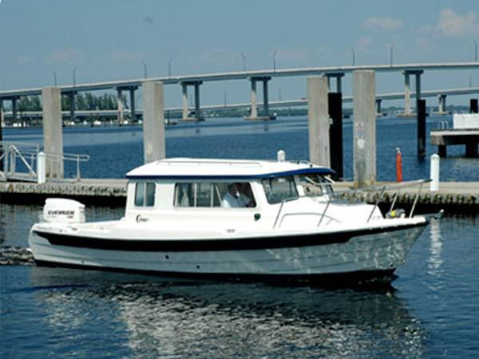

B-Scout Boat Guide · CDRY-26-V
C-Dory 26 Venture Venture Cruiser
From 2007
The C-Dory 26 Venture is a practical C-Dory pilothouse design built around light weight, shallow draft and simple cruising or fishing utility. Its layout emphasizes weather protection and cockpit function rather than luxury, with outboard propulsion on the mainstream cruiser and Venture models.

- Length
- 25.75 ft
- Beam
- 8.5 ft
- Draft
- 1.17 ft
- Hull behaviour
- Planing
- Fuel
- Gasoline
- Propulsion
- Outboard
- Engine configuration
- Single outboard up to 200 hp
- Boat family
- Cruiser
- Construction
- Fiberglass
Best for
- Owners prioritizing simple, trailerable pilothouse cruising or fishing
- Couples or small crews operating on inland and coastal waters
- Buyers who value shallow draft and outboard service access
Trade-offs
- Light hulls can have a lively ride when conditions and speed are poorly matched
- Compact cabin and side-deck arrangements limit interior volume
- Outboard-powered layouts trade inboard protection for serviceability and shallow draft
Known concerns
- No model-specific concern has been promoted to B-Scout’s evidence threshold. This does not mean the model has no age-, condition- or hull-specific risks.
Inspection focus
- Verify exact model, year and hull identity because C-Dory reused related hulls and names over a long production history
- Inspect cored hull/deck areas around penetrations and previous hardware installations
- Inspect transom or outboard bracket structure and engine mounting
- Verify fuel-system, steering and electrical updates on older examples
Continue researching
Related boat models
C-Dory 26 Pro Angler Walkaround Fishing
26 ft · Planing
C-Dory 25 Cruiser Cruiser
25.42 ft · Semi-Displacement
C-Dory 22 Cruiser Cruiser
22 ft · Planing
C-Dory TomCat 255 Power Catamaran
25.42 ft · Catamaran
Beneteau Barracuda 8 Sport-Fishing Pilothouse
26.21 ft · Planing
Beneteau Antares 8 Cruising / Fishing
26.42 ft · Planing
About this record
B-Scout preserves uncertainty: missing information remains unknown rather than being treated as a negative. Specifications and guidance describe the model record; individual boats can differ by year, equipment, refit and condition.